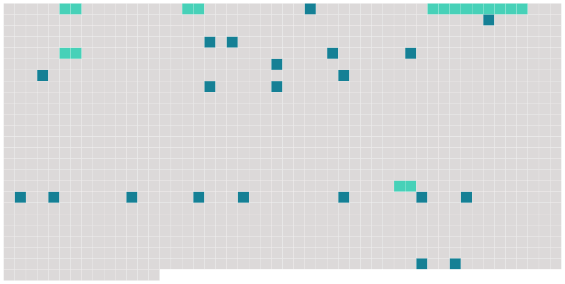

Longueur nb maillons : 26 mentions |
|
L'affection d'Élisabeth pour [Rebecca Seton] avait grandi avec les souffrances et les épreuves. [Sa belle-sœur] lui était une force, un appui.
S' [en] séparer lui fut par-dessus tout, pénible : et à [cette amie incomparable, confidente de toutes ses pensées] , elle promit le journal des événements et des impressions du voyage. [1 phrases]
Le 3 octobre, au sortir de la baie de New-York, elle écrivit à [Rebecca] : [5 phrases] [Bénissez] et [embrassez] pour moi mes chers petits. [1 phrases]
Après avoir passé les îles Açores, elles écrivait à [sa belle-sœur] : Je [vous] écris donc ; mais quand je [vous] aurai appris que mon cher William va mieux de jour en jour, et que ma petite Anna se porte bien et moi aussi, je crois que je n'aurai plus rien de bien intéressant à [vous] conter.
Si j'osais me laisser aller à mon enthousiasme, et chercher à l'exprimer par des paroles, un cahier entier ne suffirait pas à [vous] dire mes folles joies en contemplant le lever du soleil, son coucher, les clairs de lune. « Il est un autre sentiment que [vous] partagerez avec moi, et qui absorbe mon âme tout entière : c'est le tendre, le paisible, le suave amour qui surnage sur chaque moment, sur chaque heure de ma lourde épreuve. [Vous] me comprenez, parce que [vous] savez combien sont heureux ceux qui se reposent en notre Père céleste. [12 phrases]
JOURNAL D'ÉLISABETH ( Écrit pour [Rebecca Seton] ) « Une voix qui [vous] offrirait de [vous] dire en ce moment où est [votre] sœur, la sœur de [votre] âme, comme [vous] l'écouteriez avec avidité!! Eh bien, [vous] ne pourriez plus dormir tranquille dans [votre] lit, si [vous] la voyiez comme elle est, sous les verrous, dans le coin d'une immense prison, n'ayant de jour que par une étroite fenêtre fermée d'un double grillage en fer. [6 phrases]
Mon pauvre William me regardait ; ses yeux avaient une expression d'angoisse dont [vous] ne sauriez [vous] faire une idée ; il paraissait tellement souffrant, qu'on eût dit qu'il n'eût pu aller jusqu'au soir. |
 |
Il est possible de télécharger la ressource sur la page Ortolang |
Si vous avez des questions ou vous voyez des erreurs, merci d'envoyer un mail à silvia.federzoni89@gmail.com |